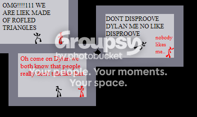
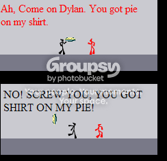
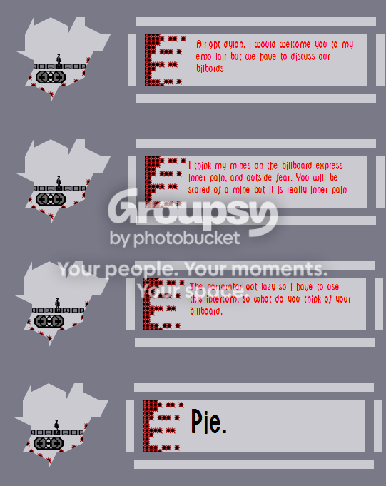
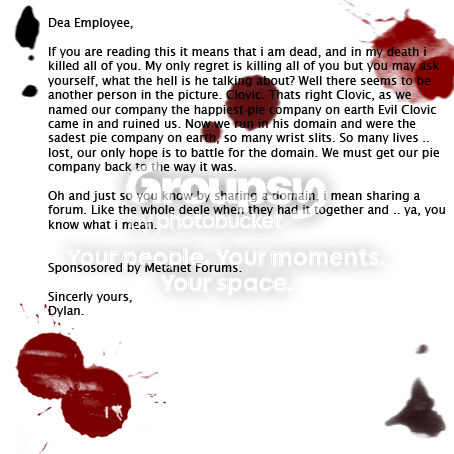

#9152 1 2006-05-31T10:24:21Z Trogdor007 Quote: LittleViking001
Why don't you all tell me what happened? Write an entertaining fictional tale describing how the Pie Emporium came to an end. Was it too big to sustain itself any longer? Is there a heartbreaking story of mystery and intrigue among the owners? Maybe people just aren't buying pies. Best story wins a prize.
Dylan has lost his modship, and there's no explanation anywhere!
Any ideas?
#182663 2 2006-05-31T10:27:26Z kamikaze3000 a large pie emporium opened on the outskirts of town and put him out of business?
#182664 3 2006-05-31T10:28:53Z rocket_thumped hmmm maybe its because Pie sucks and cobbler is the shit.... how bout a cobbler emporium?!?!?
#182666 4 2006-05-31T10:34:35Z LittleViking Why don't you all tell me what happened? Write an entertaining fictional tale describing how the Pie Emporium came to an end. Was it too big to sustain itself any longer? Is there a heartbreaking story of mystery and intrigue among the owners? Maybe people just aren't buying pies. Best story wins a prize.
#182670 5 2006-05-31T10:42:55Z rocket_thumped shit if I wanted to make up stories I would of became an author.....
#182671 6 2006-05-31T10:50:20Z kamikaze3000 The New Pie Emporium, 'Mmm, Pies', recently bought land off of a recently deceased dead man. How they managed to buy land of a deceased dead man, i don't know. Anyway, Mmm Pies recently decided that they were not selling enough pies, and decided that they must rid themselves of competitors. Recently, Dylan's Pie Emporium was making lots of money, and so Mmm Pies decided to pick on Dylan.
This bullying kept going on and on, until recently, Dylan disappeared. Dylan's Pie Emporium collapsed and Mmm Pies took control of the area.
It is not known whether Mmm Pies had anything to do with the recent disappearance of Dylan, but it has been heard that a body has been found.
The body was laying in a gutter on the corner of Corner Street, and it was not until later that the body was confirmed to be that of a chicken.
Dylan remained hidden for weeks, and nobody had seen him since.
heh, im not much of an author
#182672 7 2006-05-31T10:54:42Z Trogdor007 Dylan's Pie Emporium was the best in the business. Everyone loved his pies! Even his quiche was exceptional. For some reason, the people said that, in his pies, the crust was better than the filling. Pie Experts (Piethologists, if you will) were mystified by this role reversal. "The crust isn't supposed to excell like this!" "This isn't natural!" they said. And so they sent it for a chemical analysis.
By this point, Dylan lonely pie shack had grown into the largest corporation in the known world (I don't know China very well, so maybe they had a bigger one), complete with an assembly line, and Viking slave drivers to keep the workers moving. "ROW! I mean, COOK, ya bastards! COOK LIKE JA LIFE DEPENDED ON IT! Which, legally, it doesn't due to our fabulous People of Pie Workers Union, or Popwoo... BUT PRETEND JA LIFE DEPENDS ON IT!" In the factory, no one knew ALL of the recipe. And none of them knew where the crust came from. It always seemed to be premade... but one man knew it all. Dylan, the Pie Master. He had grown this business from the ground up, and intended to keep branching out. Next week, he planned to open a Cake Wing. Anyone who hated pie, must've loved cake.
A few days later, and the chemical analysis returned. The Piethologists held their breath, and examined the papers. "Cocaine." one said. "That's whats in the crust!" So they called LAPD, which may have been their first mistake...
Meanwhile, Dylan was sitting at his desk overlooking the factory. On top of his desk was a mountain of pure cocaine. He leans right over it, and lowers his head, where he begins to inhale. 15 minutes and 2 lbs of cocaine later, he sits up. His sister runs in, naked, with a gun, and begins to shoot at him. Dylan hides under his desk. LAPD breaks in, and shoots Dylan's sister. Out of nowhere, Dylan pulls out a grenade launcher and several machine guns, and begins firing. He gets hit several hundred times, but is still standing, until a policeman shoots in the back. He falls over the balcony, and lands in the Fountain of Pie (which constantly shoots blueberry pie filling), dead.
So ends the life of Scarface Pieface.
#182673 8 2006-05-31T10:56:07Z kamikaze3000 nooo, my story got beaten. nice one trogdor
#182674 9 2006-05-31T10:58:06Z Trogdor007 Thanks. I did it in 'bout five minutes while I supposed to be reading Dandelion Wine by Ray Bradbury.
#182675 10 2006-05-31T10:58:44Z rocket_thumped ok so I decided to be an author heres what I think happened....
So Dylan was walking along in the bahamas when he suddenly tripped over a peice of wood stuck in the beach. Dylan exlcaimed "Ouch! peices of wood sticking out of the sand hurts!" So Dylan being the model citizen we all know pulled the peice of wood out of the sand. He saw that there was a strange markings all over it and exclaimed "a treasure map!" With his knewly found map he gathered his shovel and dug up a giant treasure chest! Dylan became really rich really fast and his Pie Emporium was booming with business. Of course untill the Egyptian Mafia kidnapped him and sent him to Egypt were he became a belly dancer and Rauls bitch inside prison. The Pie Emporium ran out of bussiness without Dylans masterful leadership and cunning.
FIN
lol that was all made up off the top of my head..... yeah I know stupid but creative:D
#182676 11 2006-05-31T11:00:35Z rocket_thumped shit I think both of ya got me beat...
#182747 12 2006-05-31T17:50:15Z Clovic Hahahahaha
I'm literally el oh el'ing.
#182778 13 2006-05-31T19:59:18Z Trogdor007 I hope I win, though! Clovic, do you know the real reason?
#182788 14 2006-05-31T20:10:15Z elaxion ok, ill try my hand at a tale of mistigue and woe, or ill make it funny, which ever works
It was a cold july day as the townfolk followed their leader dylan to the factory. The men help pichforks and the women held their babys close. As they walked up the hill to the factory gates, they passed a sign that said "mean inc. baking pies out of children for 100 years". They moved on, prepared for the worst. As they go to the warehouse Dylan entered alone. He knew what lay ahead. He saw it...the secret recipe. He approached the safe thinking of the preperation needed for what he was about to do. He placed his ear to the safe and spun the dial, he then walked back ten steps and...shot the safe with many weapons until he was heard and suroundd by guards. Here comes the skill.....he grabbed the paper and ran......well, not so much skill as speed. SO he ran to the gates with the townsfolk behind him. He ran all the way to his factory and locked the safe. He then prepared the new recipe. He was successful for the recipe and was known as the best pie maker ever. Dylan checked his mail...uh oh........a message from court. He was being sued for copywite. It seems that mean inc. had friends in high places. Disney tipped them off that it was illegal what they did. Dylan and all of the townsfolk were locked up forever and they....died.
this is awful, i know, but its better than rocket thumped i think
#182800 15 2006-05-31T20:43:45Z Clovic Actually, I really don't. I didn't even know about it until I checked here this morning.
#182803 16 2006-05-31T20:46:50Z rocket_thumped Do you know what the prize is Clovic?
#182825 17 2006-05-31T21:41:43Z 47 WHAT. THE. FUCK.
Seriously, WHAT THE FUCK?! I WILL HAVE MY REVENGE!
REVENGE!
#182829 18 2006-05-31T21:44:46Z rocket_thumped how ya liking prison in egypt...
#182854 19 2006-05-31T22:41:25Z Keron Cyst I WILL HAVE MY REVENGE!
REVENGE!
Now you have a reason to join Clovic in his emo house

#182929 20 2006-06-01T02:23:45Z capt_weasle Deep within the confines of this lonely and sad, sad world, stood a hope for the future. Something to brighten your day, slap a smile on that sorry face of yours. What was it, you may ask? 'Twas incredible Pie. Yes, Pie. Everyone less-than-three's Pie. Except Rocket_Thumped. But he's scedualed to be burnt at the stake next Tuesday because of his hatred towards pie, and, well, he floats in water. Like a duck. Anyway, despite the fact that there was Pie in the nation, in this sad, sad world, live sad, sad people. His name, Lonely Clovic. Lonely Clovic frowned upon this Pie, and he did frown. Lonely Clovic did not want all the love and happiness that was brought on by, by this pie. So he cut himself for days thinking about how to deal with all of this niceness. So he decided to buy out Pie. Buy it all up and buuuuuurn it. He knew that would bring extreme sadness over the land, and oh how he cried over it. He cried, and he enjoyed the sadness of it. The End.
But if only Lonely Clovic knew that when you mix the words Dylen and Pie, you get Die. Tsk tsk tsk. If only if only.
#182941 21 2006-06-01T02:44:59Z Ngaged Why don't you all tell me what happened? Write an entertaining fictional tale describing how the Pie Emporium came to an end. Was it too big to sustain itself any longer? Is there a heartbreaking story of mystery and intrigue among the owners? Maybe people just aren't buying pies. Best story wins a prize.
If you're serious, I could actually write a nice little story for y'all.

#182965 22 2006-06-01T06:39:49Z Teedle Don't end the competition for a while, I've got a fully fledged script slowly developing...
#182969 23 2006-06-01T07:37:08Z LittleViking You guys'll have a full week at least. No need to rush. No deadline.
#182994 24 2006-06-01T10:25:06Z Trogdor007 Changed the title and the first post.
#183006 25 2006-06-01T11:07:27Z Mr_Mongoose My story will be full of thrils, spills and nudity and violence and sex and more nudity. A tale of treachery and courage. A tale of freindship and a bond between an man and his best freind that is tougher than nails.
And more nudity.

Revenge of the Pie - out in cinemas June 12
* I hope you realised that this was a joke *
#183367 26 2006-06-02T02:17:55Z VV33 this is a tale of horor:
so dilan sold pies over the interwebs, he was a good pie maker and had a good way to send pie allover the world withing hours. because of this he was get realy rich! but, for some unknow mystic reason, the section of the forum that he moded, and were he had his store "front" was ruthlessly deleted by the evil mods of doom! dilan now sits in his room and cries about the loss of his wonderful business, money, future. he also is ploting revenge against the "dark mod from beyond the grave" who did this to him
this is odd

even for me

#183370 27 2006-06-02T02:25:01Z 47 I could stand "Dylen," but "Dilan"?!
Some bad shit is gonna go down if another person misspells it...
#183375 28 2006-06-02T02:39:27Z Trogdor007 Calm down, Delain. He didn't know any better.
#183566 29 2006-06-02T15:42:08Z VV33 i'm sory!

*begs forgiveness*
#183594 30 2006-06-02T17:19:54Z Keron Cyst *sor
ry*

#183872 31 2006-06-03T03:08:49Z Trogdor007 Well, I'm sure Clovic is very sad after the loss of Fellow mod, Dylan.
So... here.
Attachment (lost): post-45-1149304129.gif
#184881 32 2006-06-05T03:23:29Z rocket_thumped haha man thats priceless...
#185066 33 2006-06-05T18:21:29Z McP3000 No, i saw it at the dollar store for 4.99 yesterday...
#185078 34 2006-06-05T18:47:41Z kamikaze3000 rofl - thats hilarious mcp - dont see why its in a dollar store for 4.99 though
#185092 35 2006-06-05T19:08:57Z McP3000 That's also part of the joke...now its not funny....

#185167 36 2006-06-05T20:24:05Z rocket_thumped lol... kamikaze....
#185189 37 2006-06-05T21:13:19Z kamikaze3000 ...i was just in a 2 hours maths exam so im not really thinking straight
#185727 38 2006-06-07T06:31:12Z rocket_thumped cmon cmon, whose the winner?!?!?
#185733 39 2006-06-07T06:48:41Z LittleViking Nah, I don't like any of 'em, sorry. If Clovic or Dylan want to choose a winner, I'll give them a prize.
Edit: Or if anyone wants more time to prepare a submission, that won't be a problem. As long as the wait is reasonable.
#185735 40 2006-06-07T06:52:57Z rocket_thumped you dont like my story, it has all the elements of a good story.... buried treasure, the mafia and belly dancers!!!
#185768 41 2006-06-07T10:17:42Z Teedle Give me... one week? I shall work on it on the coming weekend.
#186133 42 2006-06-08T02:53:48Z 47 I concur with TDL. I want to make a full-scale comic story for this, and finals are tomorrow.
#186135 43 2006-06-08T03:04:58Z LittleViking Then for the good of the Pie Emporium, we wait!
#186136 44 2006-06-08T03:06:29Z Trogdor007 Mine is still in the running, I assume?
#186152 45 2006-06-08T03:38:35Z rocket_thumped no he said he didnt like any of them...
#186160 46 2006-06-08T04:07:04Z 47 Seeing as these stories are about me, I decided to read them, for criticism and historical accuracy.
The New Pie Emporium, 'Mmm, Pies', recently bought land off of a recently deceased dead man. How they managed to buy land of a deceased dead man, i don't know. Anyway, Mmm Pies recently decided that they were not selling enough pies, and decided that they must rid themselves of competitors. Recently, Dylan's Pie Emporium was making lots of money, and so Mmm Pies decided to pick on Dylan.
This bullying kept going on and on, until recently, Dylan disappeared. Dylan's Pie Emporium collapsed and Mmm Pies took control of the area.
It is not known whether Mmm Pies had anything to do with the recent disappearance of Dylan, but it has been heard that a body has been found.
The body was laying in a gutter on the corner of Corner Street, and it was not until later that the body was confirmed to be that of a chicken.
Dylan remained hidden for weeks, and nobody had seen him since.
Uhh sure.
Dylan's Pie Emporium was the best in the business. Everyone loved his pies! Even his quiche was exceptional. For some reason, the people said that, in his pies, the crust was better than the filling. Blah blah story blah blah blah
I dont have a sister. The rest of it is totally true though. Cept I wouldnt bother even catering (PUN!) to those cake-loving bastards.
So Dylan being the model citizen we all know pulled the peice of wood out of the sand.
DAMN STRAIGHT!
Dylan became really rich really fast and his Pie Emporium was booming with business.
DAMN STRAIGHT!
Of course untill the Egyptian Mafia kidnapped him and sent him to Egypt were he became a belly dancer and Rauls bitch inside prison.
DAMN STRAIG-- err, wait
The Pie Emporium ran out of bussiness without Dylans masterful leadership and cunning.
DAMN STRAIGHT!
It was a cold july day as the townfolk followed their leader dylan to the factory. The men help pichforks and the women held their babys close. As they walked up the hill to the factory gates, they passed a sign that said "mean inc. baking pies out of children for 100 years". They moved on, prepared for the worst. As they go to the warehouse Dylan entered alone. He knew what lay ahead. He saw it...the secret recipe. He approached the safe thinking of the preperation needed for what he was about to do. He placed his ear to the safe and spun the dial, he then walked back ten steps and...shot the safe with many weapons until he was heard and suroundd by guards. Here comes the skill.....he grabbed the paper and ran......well, not so much skill as speed. SO he ran to the gates with the townsfolk behind him. He ran all the way to his factory and locked the safe. He then prepared the new recipe. He was successful for the recipe and was known as the best pie maker ever. Dylan checked his mail...uh oh........a message from court. He was being sued for copywite. It seems that mean inc. had friends in high places. Disney tipped them off that it was illegal what they did. Dylan and all of the townsfolk were locked up forever and they....died.
Err no.
Deep within the confines of this lonely and sad, sad world, stood a hope for the future. Something to brighten your day, slap a smile on that sorry face of yours. What was it, you may ask? 'Twas incredible Pie. Yes, Pie. Everyone less-than-three's Pie. Except Rocket_Thumped. But he's scedualed to be burnt at the stake next Tuesday because of his hatred towards pie, and, well, he floats in water. Like a duck. Anyway, despite the fact that there was Pie in the nation, in this sad, sad world, live sad, sad people. His name, Lonely Clovic. Lonely Clovic frowned upon this Pie, and he did frown. Lonely Clovic did not want all the love and happiness that was brought on by, by this pie. So he cut himself for days thinking about how to deal with all of this niceness. So he decided to buy out Pie. Buy it all up and buuuuuurn it. He knew that would bring extreme sadness over the land, and oh how he cried over it. He cried, and he enjoyed the sadness of it. The End.
Meh. Didnt do too much for me.
so dilan sold pies over the interwebs, he was a good pie maker and had a good way to send pie allover the world withing hours. because of this he was get realy rich! but, for some unknow mystic reason, the section of the forum that he moded, and were he had his store "front" was ruthlessly deleted by the evil mods of doom! dilan now sits in his room and cries about the loss of his wonderful business, money, future. he also is ploting revenge against the "dark mod from beyond the grave" who did this to him
You spelled my name wrong! Graaagghhghgh!
Ok, Im done.
#186166 47 2006-06-08T05:44:17Z rocket_thumped you know what? cobbler kicks ass...
#188795 48 2006-06-13T04:56:23Z 47 Uhh, yeah, about the story thing... I'll get to it this weekend. I promise.
#188825 49 2006-06-13T09:50:35Z Teedle sorry, no story coming from me, please move on
#190484 50 2006-06-16T21:56:50Z elaxion YES, I got a DAMN STRAIGHT!. So I take it that I'm still in the running. My story isn't very good at all, though.
#190659 51 2006-06-17T08:27:03Z kamikaze3000 The Beginning. The Pie Emporium came to its end during the second Gulf War. The Americans shot homing missiles at the Iraqi rebels, and missed... badly. The End
#192292 52 2006-06-21T01:45:29Z Sketch Once upon a time, there where two young lads named Dylan and Clovic. Clovic was an intelectual. Dylan was less of an intelectual. They where the best of friends but on occasions they would fight. Dylan hated being proved wrong, Clovic hated when Dylan got mad at him, it was a vicious circle. Clovic just corrected Dylan to help him, but Dylan would never listen and bicker back. Clovic got sad, and decided that the only way to relieve his stress was to cut himself. They were the best of friends but there were occasions when they disagreed.

It was Dylan who first started an obsesive habbit of Pie, he was crazy in love with it. Clovic left him alone in his pie world. Yet, he was so annoying to him. There were some moments where you couldn't help but say something that was a little against pie.

The friends were in a pickle. They wanted to keep their friendship but they also wanted their own private space. They had no clue what to do. If they where to share a room together they would end up killing each other. If they didn't share a room together Clovic would end up dying. There was only one thing to do, seek help from the wise Ninja Iangb.
They now knew their goal. It was to start a buisness together, that way they would each mannage their own part of the buisness and would consist of sharing a friendship. It was the genius plan! [thanks jesus]. Dylan would make his part of the company a pie emporium, consisting of the production of pies. Clovic didn't know what to do for his part of the building, so it was basically just empty space. It eventually became Clovic's house of Emo.
Dylan and clovic discused the signs of there new companies, but Clovic was selling much more than Dylan so he was in luxury.

As time grew by, clovic's house of Emo became more popular than the pie emporium. This enfuriated Dylan! But he stould prould and wouldn't let anyone know his incredibly Devious plan - to kill Clovic. He closed down his company and immediatley pulled out of the running. He couldn't let someone take his pies away from him! That would never happen! It was pitch black at night when Dylan pie-bombed himself destroying his beloved factory. Clovic sad as could be, left his house of emo open, with the desicrated house that titled "pie". It seems that things ended just how they started.

END
Just so you know, every single event can be linked back to incidents on the forum, yeah im cool like that#192366 53 2006-06-21T04:11:22Z Calcy Nice one, Sketch. The best by far. It brought tears to my eyes.
*plays Taps*
#193715 54 2006-06-24T00:55:55Z Guest That was... that was....
funny
cool
smart
ridiculous
true
sad
girlish
laughable
pie-ish
blood spatters
false
arguable
my favorite
the winner